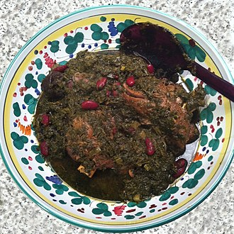

Home
Ghormeh sabzi recipe

Ghormeh Sabzi stew - Popular Iranian Cuisine
Description
Ghormeh sabzi, also known as Khoresht sabzi,
also spelled qormeh sabzi, is an Iranian herb stew.
It is considered the national dish and is a very
popular dish in Iran.
Ingredients
- 1 lb beef or lamb, cubed
- 1 onion, finely chopped
- 1/2 cup red kidney beans, soaked or canned
- 4 dried Persian limes (limu omani), pierced
- 1 tsp turmeric
- 1 bunch parsley, finely chopped
- 1 bunch cilantro, finely chopped
- 4-5 green onions or scallions, chopped (green parts)
- 2 tbsp dried fenugreek leaves
- 2 cups spinach or chard, chopped
- Salt, pepper, oil
Steps
- Sauté chopped onions in oil until golden.
- Add cubed meat, turmeric, salt, and pepper; brown the meat.
- Mix in kidney beans, cover with water, and simmer.
- Sauté chopped herbs and fenugreek in a separate pan until wilted and fragrant.
- Add fried herbs and dried limes to the stew; simmer for 1–2 hours until the meat is tender and the flavors meld.
- Adjust seasoning and add a little lemon juice for extra tang if desired.
- Serve hot with white rice.